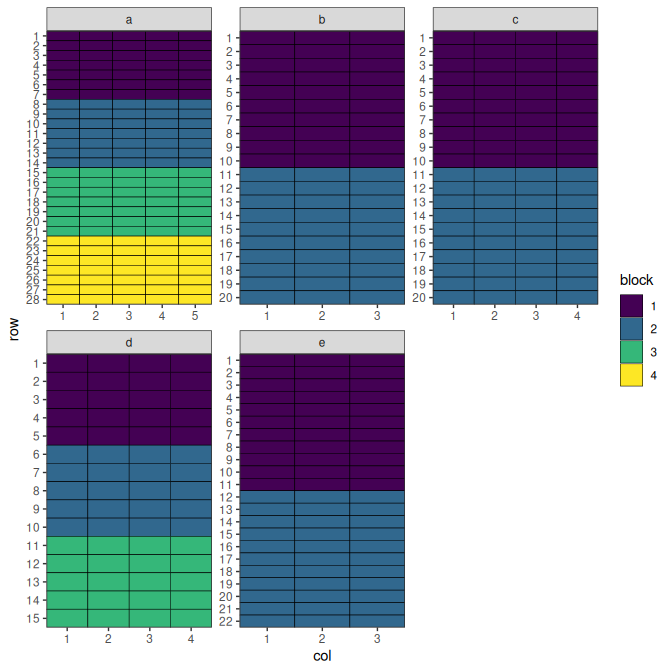
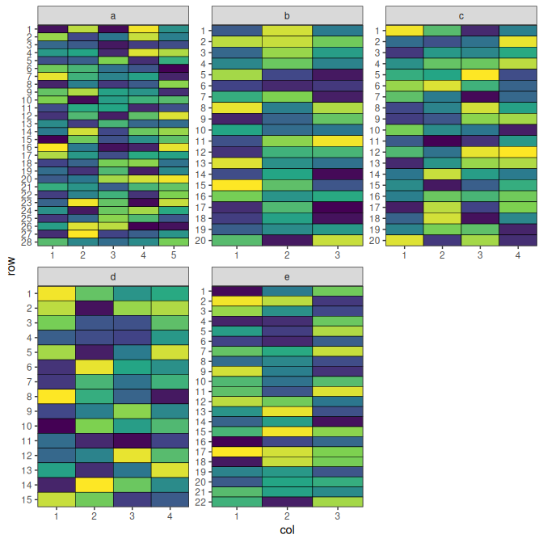
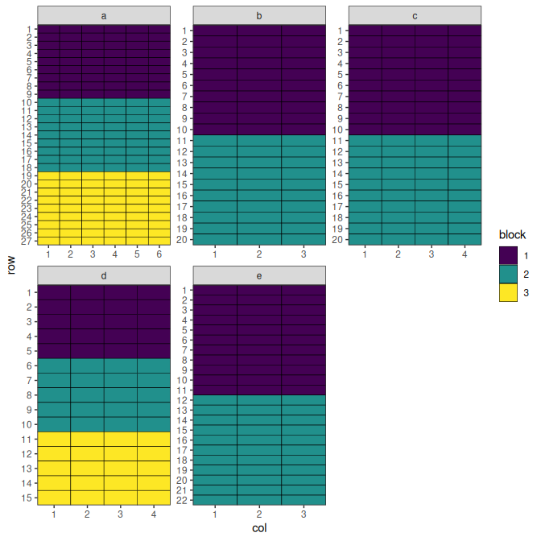
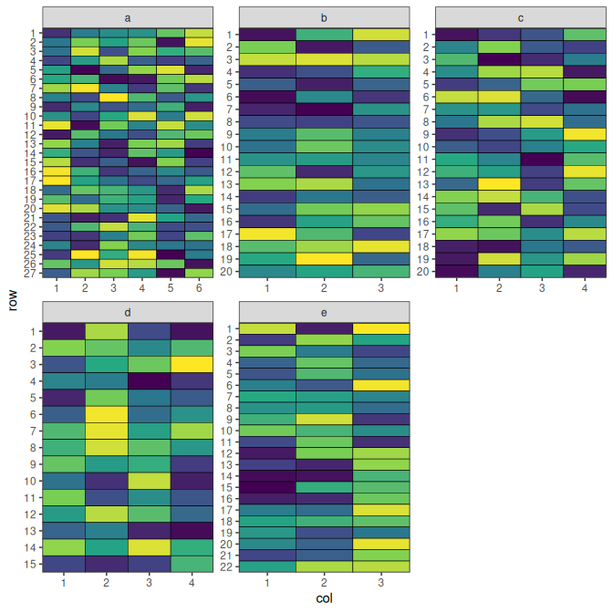
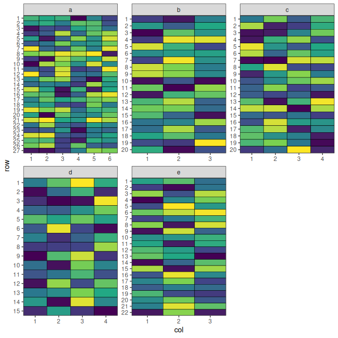
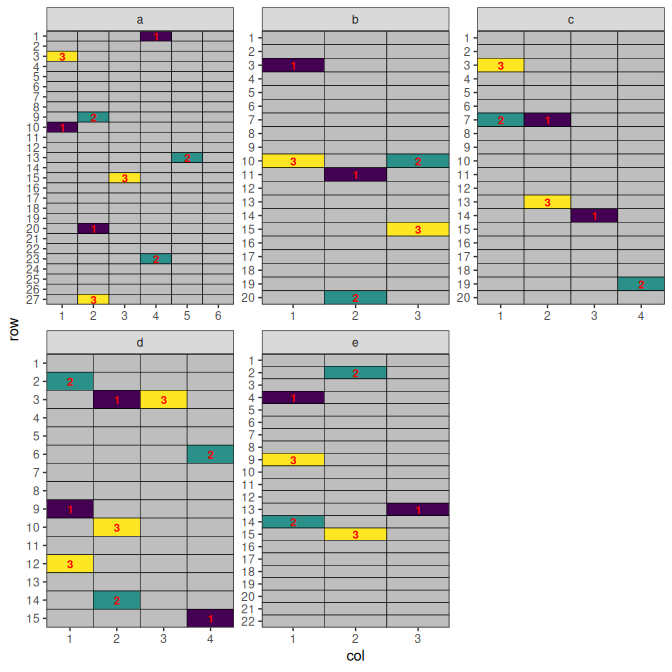

MET Design
Overview
Multi-environment trials (MET) are experimental designs used to evaluate the performance of treatments across different environments. An environment typically represents a unique combination of location, year, season, or management practice. MET designs are essential for understanding genotype × environment (G×E) interactions, stability, and adaptability of treatments under different conditions.
When to Use
- Treatment evaluation across multiple locations and/or years
- Crop breeding and regional recommendation trials
- Testing stability and adaptability
- When results are intended for large geographic areas
Structure
- Sites: Different locations of the trial
- Site-blocks: Blocks within sites
Optimising Allocation across All Sites
Setting Up MET Design with speed
Now we can create a data frame representing a MET design. Note that we can specify different dimensions for each site in the designs argument.
all_treatments <- c(rep(1:50, 7), rep(51:57, 8))
met_design <- initialise_design_df(
items = all_treatments,
designs = list(
a = list(nrows = 28, ncols = 5, block_nrows = 7, block_ncols = 5),
b = list(nrows = 20, ncols = 3, block_nrows = 10, block_ncols = 3),
c = list(nrows = 20, ncols = 4, block_nrows = 10, block_ncols = 4),
d = list(nrows = 15, ncols = 4, block_nrows = 5, block_ncols = 4),
e = list(nrows = 22, ncols = 3, block_nrows = 11, block_ncols = 3)
)
)
met_design$site_col <- paste(met_design$site, met_design$col, sep = "_")
met_design$site_block <- paste(met_design$site, met_design$block, sep = "_")
head(met_design)## row col treatment row_block col_block block site site_col site_block
## 1 1 1 1 1 1 1 a a_1 a_1
## 2 2 1 2 1 1 1 a a_1 a_1
## 3 3 1 3 1 1 1 a a_1 a_1
## 4 4 1 4 1 1 1 a a_1 a_1
## 5 5 1 5 1 1 1 a a_1 a_1
## 6 6 1 6 1 1 1 a a_1 a_1
met_design$block <- factor(met_design$block)
plot_layout <- function(df, fill) {
scale_fill <- if (is.numeric(df[[fill]])) {
ggplot2::scale_fill_viridis_c
} else {
ggplot2::scale_fill_viridis_d
}
return(
ggplot2::ggplot(df, ggplot2::aes(col, row, fill = get(fill))) +
ggplot2::geom_tile(color = "black") +
scale_fill(na.value = "grey") +
ggplot2::facet_wrap(~site, scales = "free") +
ggplot2::scale_x_continuous(expand = c(0, 0), breaks = 1:max(df$col)) +
ggplot2::scale_y_continuous(expand = c(0, 0), breaks = 1:max(df$row), trans = scales::reverse_trans()) +
ggplot2::theme_bw() +
ggplot2::labs(fill = fill) +
ggplot2::theme(panel.grid.major = ggplot2::element_blank(), panel.grid.minor = ggplot2::element_blank())
)
}
plot_layout(met_design, "block")
Performing the Optimisation
For MET designs, we use lists of named arguments to specify the hierarchical structure. The optimise parameter defines what to optimise and constraints at each level.
Each site numbers its rows and columns from 1, so several plots share the same row/col pair. A MET is not one grid but several, which share a treatment set and never share an edge. Tell speed() which column separates them with the by element of grid_factors:
optimise <- list(
connectivity = list(spatial_factors = ~site),
balance = list(swap_within = "site", spatial_factors = ~ site_col + site_block)
)
met_result <- speed(
data = met_design,
swap = "treatment",
early_stop_iterations = 5000,
optimise = optimise,
grid_factors = list(dim1 = "row", dim2 = "col", by = "site"),
optimise_params = optim_params(random_initialisation = TRUE),
adj_weight = 0,
seed = 112
)## row and col are used as row and column, respectively.## Optimising level: connectivity
## Level: connectivity Iteration: 1000 Score: 2.305764 Best: 2.305764 Since Improvement: 9
## Level: connectivity Iteration: 2000 Score: 0.9843358 Best: 0.9843358 Since Improvement: 5
## Level: connectivity Iteration: 3000 Score: 0.8414787 Best: 0.8414787 Since Improvement: 499
## Level: connectivity Iteration: 4000 Score: 0.7700501 Best: 0.7700501 Since Improvement: 467
## Optimal score reached at iteration 4671 for level connectivity
## Optimising level: balance
## Level: balance Iteration: 1000 Score: 9.033835 Best: 9.033835 Since Improvement: 2
## Level: balance Iteration: 2000 Score: 7.926692 Best: 7.926692 Since Improvement: 193
## Level: balance Iteration: 3000 Score: 7.605263 Best: 7.605263 Since Improvement: 324
## Level: balance Iteration: 4000 Score: 7.533835 Best: 7.533835 Since Improvement: 481
## Optimal score reached at iteration 4572 for level balance
met_result## Optimised Experimental Design
## ----------------------------
## Score: 8.232456
## Iterations Run: 9243
## Stopped Early: TRUE TRUE
## Treatments:
## connectivity: 1, 2, 3, 4, 5, 6, 7, 8, 9, 10, 11, 12, 13, 14, 15, 16, 17, 18, 19, 20, 21, 22, 23, 24, 25, 26, 27, 28, 29, 30, 31, 32, 33, 34, 35, 36, 37, 38, 39, 40, 41, 42, 43, 44, 45, 46, 47, 48, 49, 50, 51, 52, 53, 54, 55, 56, 57
## balance: 1, 2, 3, 4, 5, 6, 7, 8, 9, 10, 11, 12, 13, 14, 15, 16, 17, 18, 19, 20, 21, 22, 23, 24, 25, 26, 27, 28, 29, 30, 31, 32, 33, 34, 35, 36, 37, 38, 39, 40, 41, 42, 43, 44, 45, 46, 47, 48, 49, 50, 51, 52, 53, 54, 55, 56, 57
## Seed: 112Each site is then scored on its own and the results combined, so no two plots at different sites are ever treated as neighbours. Without by, a design whose sites reuse coordinates is refused rather than silently pooled - the grid-based diagnostics would otherwise describe a layout that does not exist.
Output of the Optimisation
The output shows optimisation results for the design. The score and iterations are combined for the entire design, while the treatments, and stopping criteria are reported separately for each level, allowing you to assess the quality of optimisation at each hierarchy level.
str(met_result)## List of 9
## $ design_df :'data.frame': 406 obs. of 9 variables:
## ..$ row : int [1:406] 1 1 1 1 1 1 1 1 1 1 ...
## ..$ col : int [1:406] 1 1 1 1 1 2 2 2 2 2 ...
## ..$ treatment : int [1:406] 3 17 56 56 2 51 53 40 42 24 ...
## ..$ row_block : num [1:406] 1 1 1 1 1 1 1 1 1 1 ...
## ..$ col_block : num [1:406] 1 1 1 1 1 1 1 1 1 1 ...
## ..$ block : Factor w/ 4 levels "1","2","3","4": 1 1 1 1 1 1 1 1 1 1 ...
## ..$ site : chr [1:406] "a" "b" "c" "d" ...
## ..$ site_col : chr [1:406] "a_1" "b_1" "c_1" "d_1" ...
## ..$ site_block: chr [1:406] "a_1" "b_1" "c_1" "d_1" ...
## $ score : num 8.23
## $ scores :List of 2
## ..$ connectivity: num [1:4671] 5.13 5.2 5.2 5.23 5.31 ...
## ..$ balance : num [1:4572] 10.2 10.2 10.2 10.1 10.1 ...
## $ temperatures :List of 2
## ..$ connectivity: num [1:4671] 100 99 98 97 96.1 ...
## ..$ balance : num [1:4572] 100 99 98 97 96.1 ...
## $ iterations_run: num 9243
## $ stopped_early : Named logi [1:2] TRUE TRUE
## ..- attr(*, "names")= chr [1:2] "connectivity" "balance"
## $ treatments :List of 2
## ..$ connectivity: chr [1:57] "1" "2" "3" "4" ...
## ..$ balance : chr [1:57] "1" "2" "3" "4" ...
## $ seed : num 112
## $ metadata :List of 6
## ..$ levels : chr [1:2] "connectivity" "balance"
## ..$ row_column: chr "row"
## ..$ col_column: chr "col"
## ..$ grid_by : chr "site"
## ..$ per_level :List of 2
## .. ..$ connectivity:List of 13
## .. .. ..$ swap : chr "treatment"
## .. .. ..$ spatial_factors :Class 'formula' language ~site
## .. .. .. .. ..- attr(*, ".Environment")=<environment: R_GlobalEnv>
## .. .. ..$ spatial_cols : chr "site"
## .. .. ..$ adj_weight : num 0
## .. .. ..$ bal_weight : num 1
## .. .. ..$ iterations : num 10000
## .. .. ..$ start_temp : num 100
## .. .. ..$ cooling_rate : num 0.99
## .. .. ..$ obj_function :function (layout_df, swap, spatial_cols, adj_weight = 1, bal_weight = 1,
## row_column = "row", col_column = "col", current_score_obj = NULL, swapped_items = NULL,
## ...)
## .. .. .. ..- attr(*, "srcref")= 'srcref' int [1:8] 43 23 107 1 23 1 43 107
## .. .. .. .. ..- attr(*, "srcfile")=Classes 'srcfilecopy', 'srcfile' <environment: 0x557102d0dc50>
## .. .. ..$ final_score : num 0.734
## .. .. ..$ final_components: Named num [1:2] 0 0.734
## .. .. .. ..- attr(*, "names")= chr [1:2] "adjacency" "balance"
## .. .. ..$ optimal_score : num 0.734
## .. .. ..$ stop_reason : chr "optimal"
## .. ..$ balance :List of 13
## .. .. ..$ swap : chr "treatment"
## .. .. ..$ spatial_factors :Class 'formula' language ~site_col + site_block
## .. .. .. .. ..- attr(*, ".Environment")=<environment: R_GlobalEnv>
## .. .. ..$ spatial_cols : chr [1:2] "site_col" "site_block"
## .. .. ..$ adj_weight : num 0
## .. .. ..$ bal_weight : num 1
## .. .. ..$ iterations : num 10000
## .. .. ..$ start_temp : num 100
## .. .. ..$ cooling_rate : num 0.99
## .. .. ..$ obj_function :function (layout_df, swap, spatial_cols, adj_weight = 1, bal_weight = 1,
## row_column = "row", col_column = "col", current_score_obj = NULL, swapped_items = NULL,
## ...)
## .. .. .. ..- attr(*, "srcref")= 'srcref' int [1:8] 43 23 107 1 23 1 43 107
## .. .. .. .. ..- attr(*, "srcfile")=Classes 'srcfilecopy', 'srcfile' <environment: 0x557102d0dc50>
## .. .. ..$ final_score : num 7.5
## .. .. ..$ final_components: Named num [1:2] 0 7.5
## .. .. .. ..- attr(*, "names")= chr [1:2] "adjacency" "balance"
## .. .. ..$ optimal_score : num 7.5
## .. .. ..$ stop_reason : chr "optimal"
## ..$ call : language speed(data = met_design, swap = "treatment", grid_factors = list(dim1 = "row", dim2 = "col", by = "site"), e| __truncated__ ...
## - attr(*, "class")= chr [1:2] "design" "list"No duplicated treatments along any row, column, or block.
check_no_dupes <- function(df) {
cat(max(table(df$treatment, df$site_col)), sep = "", ", ")
cat(max(table(df$treatment, paste0(df$site, df$row))), sep = "", ", ")
cat(max(table(df$treatment, df$site_block)))
}
df <- met_result$design_df
check_no_dupes(df)## 1, 1, 1Visualise the Output
plot_layout(met_result$design_df, "treatment") +
ggplot2::theme(legend.position = "none")
This design has now been optimised at both the connectivity between sites and the balance within each site.
Optimising Allocation across Some Sites
Setting Up MET Design with speed
Now we can create a data frame representing a MET design. Note that we can specify different dimensions for each site in the designs argument.
fixed_treatments <- rep(1:54, 3)
non_fixed_treatments <- c(rep(1:50, 5), rep(51:54, 4))
met_design <- initialise_design_df(
designs = list(
a = list(items = fixed_treatments, nrows = 27, ncols = 6, block_nrows = 9, block_ncols = 6),
b = list(items = non_fixed_treatments[1:60], nrows = 20, ncols = 3, block_nrows = 10, block_ncols = 3),
c = list(items = non_fixed_treatments[1:80 + 60], nrows = 20, ncols = 4, block_nrows = 10, block_ncols = 4),
d = list(items = non_fixed_treatments[1:60 + 140], nrows = 15, ncols = 4, block_nrows = 5, block_ncols = 4),
e = list(items = non_fixed_treatments[1:66 + 200], nrows = 22, ncols = 3, block_nrows = 11, block_ncols = 3)
)
)
met_design$site_col <- paste(met_design$site, met_design$col, sep = "_")
met_design$site_block <- paste(met_design$site, met_design$block, sep = "_")
met_design$allocation <- "free"
met_design$allocation[met_design$site == "a"] <- NA
head(met_design)## row col treatment row_block col_block block site site_col site_block
## 1 1 1 1 1 1 1 a a_1 a_1
## 2 2 1 2 1 1 1 a a_1 a_1
## 3 3 1 3 1 1 1 a a_1 a_1
## 4 4 1 4 1 1 1 a a_1 a_1
## 5 5 1 5 1 1 1 a a_1 a_1
## 6 6 1 6 1 1 1 a a_1 a_1
## allocation
## 1 <NA>
## 2 <NA>
## 3 <NA>
## 4 <NA>
## 5 <NA>
## 6 <NA>
met_design$block <- factor(met_design$block)
plot_layout(met_design, "block")
Performing the Optimisation
For MET designs, we use lists of named arguments to specify the hierarchical structure. The optimise parameter defines what to optimise and constraints at each level.
optimise <- list(
connectivity = list(swap_within = "allocation", spatial_factors = ~site),
balance = list(swap_within = "site", spatial_factors = ~ site_col + site_block)
)
met_result <- speed(
data = met_design,
swap = "treatment",
early_stop_iterations = 10000,
iterations = 50000,
optimise = optimise,
grid_factors = list(dim1 = "row", dim2 = "col", by = "site"),
optimise_params = optim_params(random_initialisation = 10),
adj_weight = 0,
seed = 112
)## row and col are used as row and column, respectively.## Optimising level: connectivity
## Level: connectivity Iteration: 1000 Score: 1.348707 Best: 1.348707 Since Improvement: 7
## Level: connectivity Iteration: 2000 Score: 0.7449336 Best: 0.7449336 Since Improvement: 60
## Optimal score reached at iteration 2282 for level connectivity
## Optimising level: balance
## Level: balance Iteration: 1000 Score: 9.178197 Best: 9.178197 Since Improvement: 5
## Level: balance Iteration: 2000 Score: 7.97065 Best: 7.97065 Since Improvement: 75
## Level: balance Iteration: 3000 Score: 7.555556 Best: 7.555556 Since Improvement: 135
## Level: balance Iteration: 4000 Score: 7.404612 Best: 7.404612 Since Improvement: 105
## Level: balance Iteration: 5000 Score: 7.366876 Best: 7.366876 Since Improvement: 264
## Level: balance Iteration: 6000 Score: 7.253669 Best: 7.253669 Since Improvement: 184
## Level: balance Iteration: 7000 Score: 7.215933 Best: 7.215933 Since Improvement: 920
## Level: balance Iteration: 8000 Score: 7.215933 Best: 7.215933 Since Improvement: 1920
## Level: balance Iteration: 9000 Score: 7.178197 Best: 7.178197 Since Improvement: 268
## Level: balance Iteration: 10000 Score: 7.06499 Best: 7.06499 Since Improvement: 523
## Level: balance Iteration: 11000 Score: 6.989518 Best: 6.989518 Since Improvement: 496
## Level: balance Iteration: 12000 Score: 6.989518 Best: 6.989518 Since Improvement: 1496
## Level: balance Iteration: 13000 Score: 6.914046 Best: 6.914046 Since Improvement: 109
## Level: balance Iteration: 14000 Score: 6.914046 Best: 6.914046 Since Improvement: 1109
## Level: balance Iteration: 15000 Score: 6.914046 Best: 6.914046 Since Improvement: 2109
## Level: balance Iteration: 16000 Score: 6.914046 Best: 6.914046 Since Improvement: 3109
## Level: balance Iteration: 17000 Score: 6.914046 Best: 6.914046 Since Improvement: 4109
## Level: balance Iteration: 18000 Score: 6.914046 Best: 6.914046 Since Improvement: 5109
## Level: balance Iteration: 19000 Score: 6.914046 Best: 6.914046 Since Improvement: 6109
## Level: balance Iteration: 20000 Score: 6.914046 Best: 6.914046 Since Improvement: 7109
## Level: balance Iteration: 21000 Score: 6.914046 Best: 6.914046 Since Improvement: 8109
## Level: balance Iteration: 22000 Score: 6.914046 Best: 6.914046 Since Improvement: 9109
## Optimal score reached at iteration 22918 for level balance
met_result## Optimised Experimental Design
## ----------------------------
## Score: 7.4703
## Iterations Run: 25200
## Stopped Early: TRUE TRUE
## Treatments:
## connectivity: 1, 2, 3, 4, 5, 6, 7, 8, 9, 10, 11, 12, 13, 14, 15, 16, 17, 18, 19, 20, 21, 22, 23, 24, 25, 26, 27, 28, 29, 30, 31, 32, 33, 34, 35, 36, 37, 38, 39, 40, 41, 42, 43, 44, 45, 46, 47, 48, 49, 50, 51, 52, 53, 54
## balance: 1, 2, 3, 4, 5, 6, 7, 8, 9, 10, 11, 12, 13, 14, 15, 16, 17, 18, 19, 20, 21, 22, 23, 24, 25, 26, 27, 28, 29, 30, 31, 32, 33, 34, 35, 36, 37, 38, 39, 40, 41, 42, 43, 44, 45, 46, 47, 48, 49, 50, 51, 52, 53, 54
## Seed: 112Output of the Optimisation
The output shows optimisation results for the design. The score and iterations are combined for the entire design, while the treatments, and stopping criteria are reported separately for each level, allowing you to assess the quality of optimisation at each hierarchy level.
str(met_result)## List of 9
## $ design_df :'data.frame': 428 obs. of 10 variables:
## ..$ row : int [1:428] 1 1 1 1 1 1 1 1 1 1 ...
## ..$ col : int [1:428] 1 1 1 1 1 2 2 2 2 2 ...
## ..$ treatment : int [1:428] 8 3 3 4 49 23 35 9 47 5 ...
## ..$ row_block : num [1:428] 1 1 1 1 1 1 1 1 1 1 ...
## ..$ col_block : num [1:428] 1 1 1 1 1 1 1 1 1 1 ...
## ..$ block : Factor w/ 3 levels "1","2","3": 1 1 1 1 1 1 1 1 1 1 ...
## ..$ site : chr [1:428] "a" "b" "c" "d" ...
## ..$ site_col : chr [1:428] "a_1" "b_1" "c_1" "d_1" ...
## ..$ site_block: chr [1:428] "a_1" "b_1" "c_1" "d_1" ...
## ..$ allocation: chr [1:428] NA "free" "free" "free" ...
## $ score : num 7.47
## $ scores :List of 2
## ..$ connectivity: num [1:2282] 3.05 3.05 3.05 3.08 3.12 ...
## ..$ balance : num [1:22918] 14.3 14.3 14.3 14.3 14.3 ...
## $ temperatures :List of 2
## ..$ connectivity: num [1:2282] 100 99 98 97 96.1 ...
## ..$ balance : num [1:22918] 100 99 98 97 96.1 ...
## $ iterations_run: num 25200
## $ stopped_early : Named logi [1:2] TRUE TRUE
## ..- attr(*, "names")= chr [1:2] "connectivity" "balance"
## $ treatments :List of 2
## ..$ connectivity: chr [1:54] "1" "2" "3" "4" ...
## ..$ balance : chr [1:54] "1" "2" "3" "4" ...
## $ seed : num 112
## $ metadata :List of 6
## ..$ levels : chr [1:2] "connectivity" "balance"
## ..$ row_column: chr "row"
## ..$ col_column: chr "col"
## ..$ grid_by : chr "site"
## ..$ per_level :List of 2
## .. ..$ connectivity:List of 13
## .. .. ..$ swap : chr "treatment"
## .. .. ..$ spatial_factors :Class 'formula' language ~site
## .. .. .. .. ..- attr(*, ".Environment")=<environment: R_GlobalEnv>
## .. .. ..$ spatial_cols : chr "site"
## .. .. ..$ adj_weight : num 0
## .. .. ..$ bal_weight : num 1
## .. .. ..$ iterations : num 50000
## .. .. ..$ start_temp : num 100
## .. .. ..$ cooling_rate : num 0.99
## .. .. ..$ obj_function :function (layout_df, swap, spatial_cols, adj_weight = 1, bal_weight = 1,
## row_column = "row", col_column = "col", current_score_obj = NULL, swapped_items = NULL,
## ...)
## .. .. .. ..- attr(*, "srcref")= 'srcref' int [1:8] 43 23 107 1 23 1 43 107
## .. .. .. .. ..- attr(*, "srcfile")=Classes 'srcfilecopy', 'srcfile' <environment: 0x557102d0dc50>
## .. .. ..$ final_score : num 0.632
## .. .. ..$ final_components: Named num [1:2] 0 0.632
## .. .. .. ..- attr(*, "names")= chr [1:2] "adjacency" "balance"
## .. .. ..$ optimal_score : num 0.632
## .. .. ..$ stop_reason : chr "optimal"
## .. ..$ balance :List of 13
## .. .. ..$ swap : chr "treatment"
## .. .. ..$ spatial_factors :Class 'formula' language ~site_col + site_block
## .. .. .. .. ..- attr(*, ".Environment")=<environment: R_GlobalEnv>
## .. .. ..$ spatial_cols : chr [1:2] "site_col" "site_block"
## .. .. ..$ adj_weight : num 0
## .. .. ..$ bal_weight : num 1
## .. .. ..$ iterations : num 50000
## .. .. ..$ start_temp : num 100
## .. .. ..$ cooling_rate : num 0.99
## .. .. ..$ obj_function :function (layout_df, swap, spatial_cols, adj_weight = 1, bal_weight = 1,
## row_column = "row", col_column = "col", current_score_obj = NULL, swapped_items = NULL,
## ...)
## .. .. .. ..- attr(*, "srcref")= 'srcref' int [1:8] 43 23 107 1 23 1 43 107
## .. .. .. .. ..- attr(*, "srcfile")=Classes 'srcfilecopy', 'srcfile' <environment: 0x557102d0dc50>
## .. .. ..$ final_score : num 6.84
## .. .. ..$ final_components: Named num [1:2] 0 6.84
## .. .. .. ..- attr(*, "names")= chr [1:2] "adjacency" "balance"
## .. .. ..$ optimal_score : num 6.84
## .. .. ..$ stop_reason : chr "optimal"
## ..$ call : language speed(data = met_design, swap = "treatment", grid_factors = list(dim1 = "row", dim2 = "col", by = "site"), i| __truncated__ ...
## - attr(*, "class")= chr [1:2] "design" "list"No duplicated treatments along any row, column, or block.
df <- met_result$design_df
check_no_dupes(df)## 1, 1, 1Site “a” maintains 3 replicates and no missing treatments in any other sites.
treatment_count <- table(df$treatment, df$site)
c(min(treatment_count[, "a"]), max(treatment_count[, "a"]))## [1] 3 3## [1] 1 2Visualise the Output
plot_layout(met_result$design_df, "treatment") +
ggplot2::theme(legend.position = "none")
This design has now been optimised at both the connectivity between sites and the balance within each site.
Optimising Partial Allocation across Sites
Setting Up MET Design with speed
Now we can create a data frame representing a MET design. Note that we can specify different dimensions for each site in the designs argument. Also, some treatments are pre-allocated to each site:
- Site ‘a’: Treatments 1-5
- Site ‘b’: Treatments 1-4
- Site ‘c’: Treatments 1-7
- Site ‘d’: Treatments 1-3, 8-9
- Site ‘e’: Treatments 1-5
Note
Note that
speed >= 0.0.5is required. Otherwise, there would be a bug caused by random initialisation later on.
# prepare treatments
fixed_treatments <- list(
a = rep(1:5, 3),
b = rep(1:4, 2),
c = rep(1:7, 2),
d = c(rep(1:3, 3), rep(8:10, 2)),
e = rep(1:5, 2)
)
non_fixed_treatments <- c(rep(11:19, 8), rep(20:61, 7))
met_design <- initialise_design_df(
items = 1,
designs = list(
a = list(nrows = 27, ncols = 6, block_nrows = 9, block_ncols = 6),
b = list(nrows = 20, ncols = 3, block_nrows = 10, block_ncols = 3),
c = list(nrows = 20, ncols = 4, block_nrows = 10, block_ncols = 4),
d = list(nrows = 15, ncols = 4, block_nrows = 5, block_ncols = 4),
e = list(nrows = 22, ncols = 3, block_nrows = 11, block_ncols = 3)
)
)
met_design$allocation <- "free"
# add treatments to design
for (site in unique(met_design$site)) {
n_plots_site <- nrow(met_design[met_design$site == site, ])
n_fixed <- length(fixed_treatments[[site]])
non_fixed_indices <- 1:(n_plots_site - n_fixed)
treatments <- c(fixed_treatments[[site]], non_fixed_treatments[non_fixed_indices])
met_design[met_design$site == site, ]$treatment <- treatments
met_design[met_design$site == site & met_design$treatment %in% fixed_treatments[[site]], ]$allocation <- NA
non_fixed_treatments <- non_fixed_treatments[-non_fixed_indices]
}
met_design$site_col <- paste(met_design$site, met_design$col, sep = "_")
met_design$site_block <- paste(met_design$site, met_design$block, sep = "_")
head(met_design)## row col treatment row_block col_block block site allocation site_col
## 1 1 1 1 1 1 1 a <NA> a_1
## 2 2 1 2 1 1 1 a <NA> a_1
## 3 3 1 3 1 1 1 a <NA> a_1
## 4 4 1 4 1 1 1 a <NA> a_1
## 5 5 1 5 1 1 1 a <NA> a_1
## 6 6 1 1 1 1 1 a <NA> a_1
## site_block
## 1 a_1
## 2 a_1
## 3 a_1
## 4 a_1
## 5 a_1
## 6 a_1
met_design$block <- factor(met_design$block)
plot_layout(met_design, "block")
Performing the Optimisation
For MET designs, we use lists of named arguments to specify the hierarchical structure. The optimise parameter defines what to optimise and constraints at each level.
optimise <- list(
connectivity = list(swap_within = "allocation", spatial_factors = ~site),
balance = list(swap_within = "site", spatial_factors = ~ site_col + site_block)
)
met_result <- speed(
data = met_design,
swap = "treatment",
early_stop_iterations = 8000,
iterations = 50000,
optimise = optimise,
grid_factors = list(dim1 = "row", dim2 = "col", by = "site"),
optimise_params = optim_params(random_initialisation = 30),
adj_weight = 0,
seed = 112
)## row and col are used as row and column, respectively.## Optimising level: connectivity
## Level: connectivity Iteration: 1000 Score: 3.623497 Best: 3.623497 Since Improvement: 5
## Level: connectivity Iteration: 2000 Score: 2.256831 Best: 2.256831 Since Improvement: 17
## Level: connectivity Iteration: 3000 Score: 1.990164 Best: 1.990164 Since Improvement: 10
## Level: connectivity Iteration: 4000 Score: 1.990164 Best: 1.990164 Since Improvement: 1010
## Level: connectivity Iteration: 5000 Score: 1.956831 Best: 1.956831 Since Improvement: 518
## Level: connectivity Iteration: 6000 Score: 1.923497 Best: 1.923497 Since Improvement: 428
## Level: connectivity Iteration: 7000 Score: 1.923497 Best: 1.923497 Since Improvement: 1428
## Level: connectivity Iteration: 8000 Score: 1.890164 Best: 1.890164 Since Improvement: 431
## Level: connectivity Iteration: 9000 Score: 1.890164 Best: 1.890164 Since Improvement: 1431
## Level: connectivity Iteration: 10000 Score: 1.890164 Best: 1.890164 Since Improvement: 2431
## Level: connectivity Iteration: 11000 Score: 1.890164 Best: 1.890164 Since Improvement: 3431
## Level: connectivity Iteration: 12000 Score: 1.890164 Best: 1.890164 Since Improvement: 4431
## Level: connectivity Iteration: 13000 Score: 1.890164 Best: 1.890164 Since Improvement: 5431
## Level: connectivity Iteration: 14000 Score: 1.890164 Best: 1.890164 Since Improvement: 6431
## Level: connectivity Iteration: 15000 Score: 1.890164 Best: 1.890164 Since Improvement: 7431
## Early stopping at iteration 15569 for level connectivity
## Optimising level: balance
## Level: balance Iteration: 1000 Score: 8.951366 Best: 8.951366 Since Improvement: 6
## Level: balance Iteration: 2000 Score: 7.918033 Best: 7.918033 Since Improvement: 30
## Level: balance Iteration: 3000 Score: 7.484699 Best: 7.484699 Since Improvement: 59
## Level: balance Iteration: 4000 Score: 7.384699 Best: 7.384699 Since Improvement: 374
## Level: balance Iteration: 5000 Score: 7.284699 Best: 7.284699 Since Improvement: 567
## Level: balance Iteration: 6000 Score: 7.218033 Best: 7.218033 Since Improvement: 552
## Level: balance Iteration: 7000 Score: 7.184699 Best: 7.184699 Since Improvement: 471
## Level: balance Iteration: 8000 Score: 7.151366 Best: 7.151366 Since Improvement: 740
## Level: balance Iteration: 9000 Score: 7.118033 Best: 7.118033 Since Improvement: 147
## Level: balance Iteration: 10000 Score: 7.084699 Best: 7.084699 Since Improvement: 128
## Level: balance Iteration: 11000 Score: 7.084699 Best: 7.084699 Since Improvement: 1128
## Level: balance Iteration: 12000 Score: 7.084699 Best: 7.084699 Since Improvement: 2128
## Level: balance Iteration: 13000 Score: 7.084699 Best: 7.084699 Since Improvement: 3128
## Level: balance Iteration: 14000 Score: 7.084699 Best: 7.084699 Since Improvement: 4128
## Level: balance Iteration: 15000 Score: 7.084699 Best: 7.084699 Since Improvement: 5128
## Level: balance Iteration: 16000 Score: 7.084699 Best: 7.084699 Since Improvement: 6128
## Level: balance Iteration: 17000 Score: 7.018033 Best: 7.018033 Since Improvement: 11
## Level: balance Iteration: 18000 Score: 7.018033 Best: 7.018033 Since Improvement: 1011
## Level: balance Iteration: 19000 Score: 7.018033 Best: 7.018033 Since Improvement: 2011
## Level: balance Iteration: 20000 Score: 7.018033 Best: 7.018033 Since Improvement: 3011
## Level: balance Iteration: 21000 Score: 7.018033 Best: 7.018033 Since Improvement: 4011
## Level: balance Iteration: 22000 Score: 7.018033 Best: 7.018033 Since Improvement: 5011
## Level: balance Iteration: 23000 Score: 7.018033 Best: 7.018033 Since Improvement: 6011
## Level: balance Iteration: 24000 Score: 7.018033 Best: 7.018033 Since Improvement: 7011
## Optimal score reached at iteration 24446 for level balance
met_result## Optimised Experimental Design
## ----------------------------
## Score: 8.874863
## Iterations Run: 40016
## Stopped Early: TRUE TRUE
## Treatments:
## connectivity: 1, 2, 3, 4, 5, 6, 7, 8, 9, 10, 11, 12, 13, 14, 15, 16, 17, 18, 19, 20, 21, 22, 23, 24, 25, 26, 27, 28, 29, 30, 31, 32, 33, 34, 35, 36, 37, 38, 39, 40, 41, 42, 43, 44, 45, 46, 47, 48, 49, 50, 51, 52, 53, 54, 55, 56, 57, 58, 59, 60, 61
## balance: 1, 2, 3, 4, 5, 6, 7, 8, 9, 10, 11, 12, 13, 14, 15, 16, 17, 18, 19, 20, 21, 22, 23, 24, 25, 26, 27, 28, 29, 30, 31, 32, 33, 34, 35, 36, 37, 38, 39, 40, 41, 42, 43, 44, 45, 46, 47, 48, 49, 50, 51, 52, 53, 54, 55, 56, 57, 58, 59, 60, 61
## Seed: 112Output of the Optimisation
The output shows optimisation results for the design. The score and iterations are combined for the entire design, while the treatments, and stopping criteria are reported separately for each level, allowing you to assess the quality of optimisation at each hierarchy level.
str(met_result)## List of 9
## $ design_df :'data.frame': 428 obs. of 10 variables:
## ..$ row : int [1:428] 1 1 1 1 1 1 1 1 1 1 ...
## ..$ col : int [1:428] 1 1 1 1 1 2 2 2 2 2 ...
## ..$ treatment : chr [1:428] "40" "12" "25" "26" ...
## ..$ row_block : num [1:428] 1 1 1 1 1 1 1 1 1 1 ...
## ..$ col_block : num [1:428] 1 1 1 1 1 1 1 1 1 1 ...
## ..$ block : Factor w/ 3 levels "1","2","3": 1 1 1 1 1 1 1 1 1 1 ...
## ..$ site : chr [1:428] "a" "b" "c" "d" ...
## ..$ allocation: chr [1:428] NA NA NA NA ...
## ..$ site_col : chr [1:428] "a_1" "b_1" "c_1" "d_1" ...
## ..$ site_block: chr [1:428] "a_1" "b_1" "c_1" "d_1" ...
## $ score : num 8.87
## $ scores :List of 2
## ..$ connectivity: num [1:15570] 5.06 5.09 5.09 5.09 5.16 ...
## ..$ balance : num [1:24446] 12 12 12 12 12 ...
## $ temperatures :List of 2
## ..$ connectivity: num [1:15570] 100 99 98 97 96.1 ...
## ..$ balance : num [1:24446] 100 99 98 97 96.1 ...
## $ iterations_run: num 40016
## $ stopped_early : Named logi [1:2] TRUE TRUE
## ..- attr(*, "names")= chr [1:2] "connectivity" "balance"
## $ treatments :List of 2
## ..$ connectivity: chr [1:61] "1" "2" "3" "4" ...
## ..$ balance : chr [1:61] "1" "2" "3" "4" ...
## $ seed : num 112
## $ metadata :List of 6
## ..$ levels : chr [1:2] "connectivity" "balance"
## ..$ row_column: chr "row"
## ..$ col_column: chr "col"
## ..$ grid_by : chr "site"
## ..$ per_level :List of 2
## .. ..$ connectivity:List of 13
## .. .. ..$ swap : chr "treatment"
## .. .. ..$ spatial_factors :Class 'formula' language ~site
## .. .. .. .. ..- attr(*, ".Environment")=<environment: R_GlobalEnv>
## .. .. ..$ spatial_cols : chr "site"
## .. .. ..$ adj_weight : num 0
## .. .. ..$ bal_weight : num 1
## .. .. ..$ iterations : num 50000
## .. .. ..$ start_temp : num 100
## .. .. ..$ cooling_rate : num 0.99
## .. .. ..$ obj_function :function (layout_df, swap, spatial_cols, adj_weight = 1, bal_weight = 1,
## row_column = "row", col_column = "col", current_score_obj = NULL, swapped_items = NULL,
## ...)
## .. .. .. ..- attr(*, "srcref")= 'srcref' int [1:8] 43 23 107 1 23 1 43 107
## .. .. .. .. ..- attr(*, "srcfile")=Classes 'srcfilecopy', 'srcfile' <environment: 0x557102d0dc50>
## .. .. ..$ final_score : num 1.89
## .. .. ..$ final_components: Named num [1:2] 0 1.89
## .. .. .. ..- attr(*, "names")= chr [1:2] "adjacency" "balance"
## .. .. ..$ optimal_score : num 0.557
## .. .. ..$ stop_reason : chr "no_improvement"
## .. ..$ balance :List of 13
## .. .. ..$ swap : chr "treatment"
## .. .. ..$ spatial_factors :Class 'formula' language ~site_col + site_block
## .. .. .. .. ..- attr(*, ".Environment")=<environment: R_GlobalEnv>
## .. .. ..$ spatial_cols : chr [1:2] "site_col" "site_block"
## .. .. ..$ adj_weight : num 0
## .. .. ..$ bal_weight : num 1
## .. .. ..$ iterations : num 50000
## .. .. ..$ start_temp : num 100
## .. .. ..$ cooling_rate : num 0.99
## .. .. ..$ obj_function :function (layout_df, swap, spatial_cols, adj_weight = 1, bal_weight = 1,
## row_column = "row", col_column = "col", current_score_obj = NULL, swapped_items = NULL,
## ...)
## .. .. .. ..- attr(*, "srcref")= 'srcref' int [1:8] 43 23 107 1 23 1 43 107
## .. .. .. .. ..- attr(*, "srcfile")=Classes 'srcfilecopy', 'srcfile' <environment: 0x557102d0dc50>
## .. .. ..$ final_score : num 6.98
## .. .. ..$ final_components: Named num [1:2] 0 6.98
## .. .. .. ..- attr(*, "names")= chr [1:2] "adjacency" "balance"
## .. .. ..$ optimal_score : num 6.98
## .. .. ..$ stop_reason : chr "optimal"
## ..$ call : language speed(data = met_design, swap = "treatment", grid_factors = list(dim1 = "row", dim2 = "col", by = "site"), i| __truncated__ ...
## - attr(*, "class")= chr [1:2] "design" "list"No duplicated treatments along any row, column, or block.
df <- met_result$design_df
check_no_dupes(df)## 1, 1, 1All sites maintain pre-allocated treatments.
treatment_count <- table(df$site, df$treatment)
for (site in names(fixed_treatments)) {
print(treatment_count[site, unique(as.character(fixed_treatments[[site]])), drop = FALSE])
}##
## 1 2 3 4 5
## a 3 3 3 3 3
##
## 1 2 3 4
## b 2 2 2 2
##
## 1 2 3 4 5 6 7
## c 2 2 2 2 2 2 2
##
## 1 2 3 8 9 10
## d 3 3 3 2 2 2
##
## 1 2 3 4 5
## e 2 2 2 2 2Visualise the Output
df$treatment <- as.numeric(df$treatment)
plot_layout(df, "treatment") +
ggplot2::theme(legend.position = "none")
The placements of common pre-allocated treatments.
df$treatment <- ifelse(df$treatment < 4, df$treatment, NA)
plot_layout(df, "treatment") +
ggplot2::geom_text(
ggplot2::aes(label = treatment),
size = 3,
color = "red",
na.rm = TRUE,
fontface = "bold"
) +
ggplot2::theme(legend.position = "none")
This design has now been optimised at both the connectivity between sites and the balance within each site.
Spatial Design Considerations
Field Shape and Orientation
Neighbour Effects
Using speed Effectively
- Set appropriate parameters: Balance optimisation time with improvement
- Visualise designs: Always plot layouts before implementation
- Compare alternatives: Test multiple blocking strategies
- Validate results: Check constraint satisfaction and efficiency metrics
Conclusion
Further Reading
Related Vignettes
This vignette demonstrates the versatility of the speed package for agricultural experimental design. For more advanced applications and custom designs, consult the package documentation and additional vignettes.